Trabalhos do Ano de Francisco Hauch Cardoso
Who is Francisco
Francisco é um Aluno da Faculdade Pucpr do curso de ciencia da computação e (o criador dessa pagina).
Sua grade curricular conta com algumas matérias como mostra a imagem ao lado.
Nesse site iremos ver quais trabalhos eu fiz durante o primeiro semestre do curso dentre todas as materias.
======>
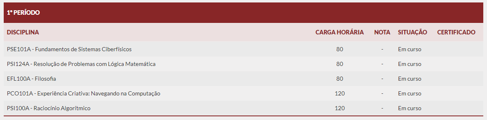
Raciocinio Algoritimo
Na materia de Raciocinio Algoritimo tivemos um conteudo bem a fundo de Python usando a Plataforma do Ptcharm.
Dentro dessa materia tivemos 2 trabalhos maiores sendo eles o Jokempo quando só sabiamos o basico da matéria e ápos isso tivemos o trabalho da Maquina de vendas
Jokempo:
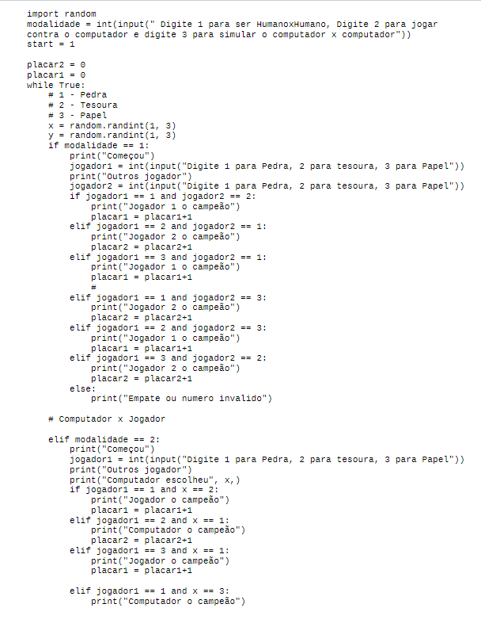
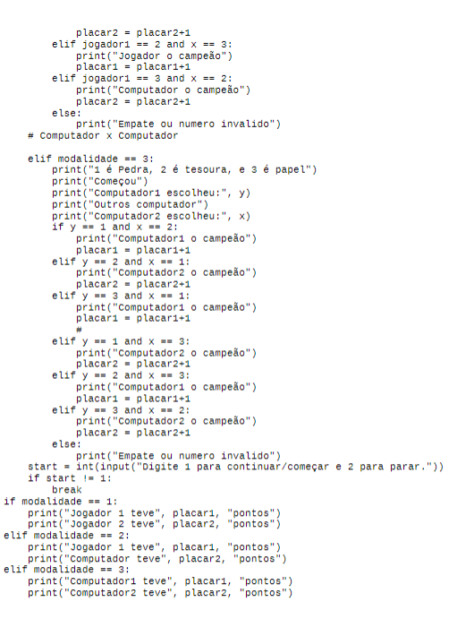
Maquina de Vendas:
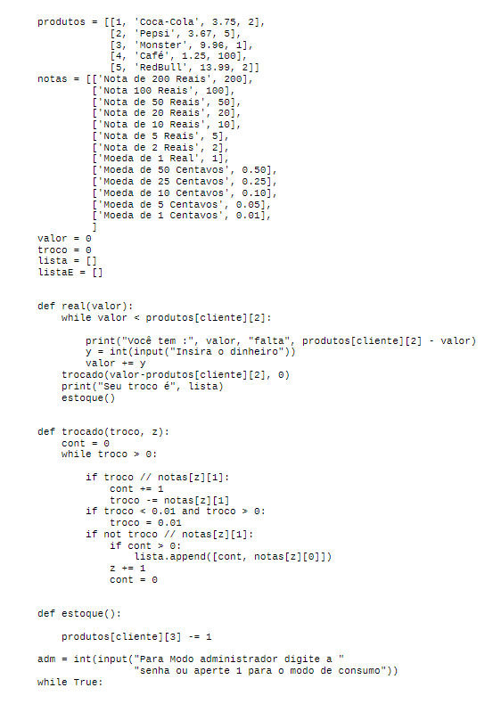
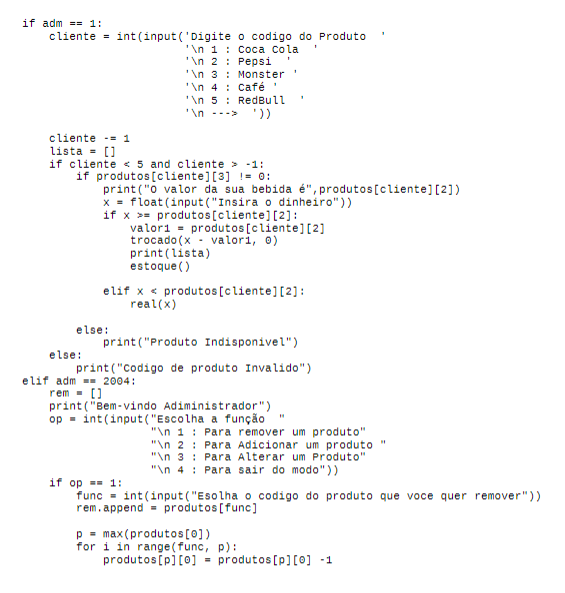
Logica Matematica
Na materia de Logica Matematica aprendemos principalmente sobre a tabela verdade e conectivos como E, OU, ==> e <==>
Dentro dessa materia tivemos poucos trabalhos grandes mas tivemos muitas listas de exercicios como por exemplo
Listas de exercicios:
CiberFisicos
Na materia de Sistemas CiberFisicos tivemos um conteudo bem a fundo de Sistemas Operacionais e um começo em Arduino.
Tivemos Poucos trabalhos na materia dele muita coisa foi em questao de questionarios porem no final do semestre tivemos alguns trabalhos de Arduino
Questionarios:
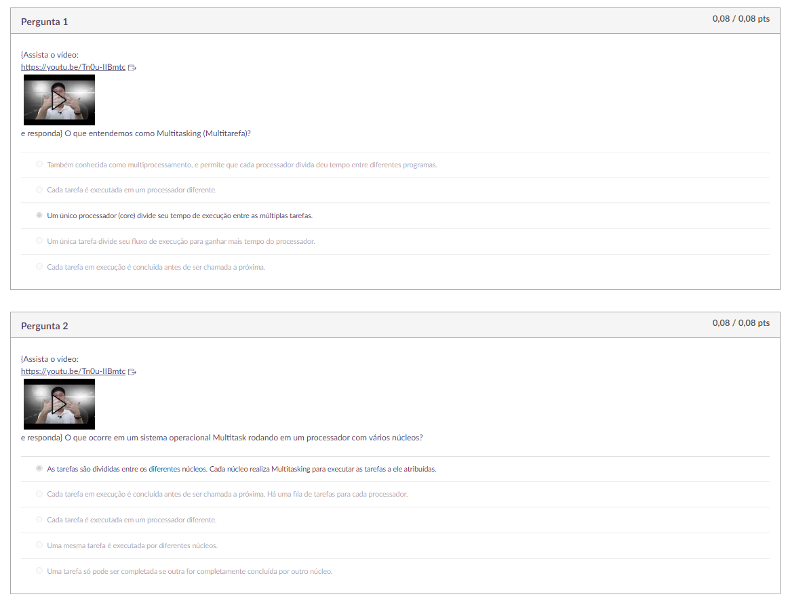
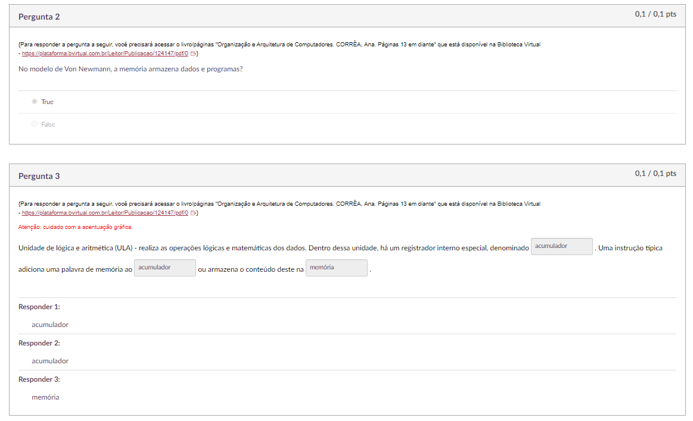
Arduino:
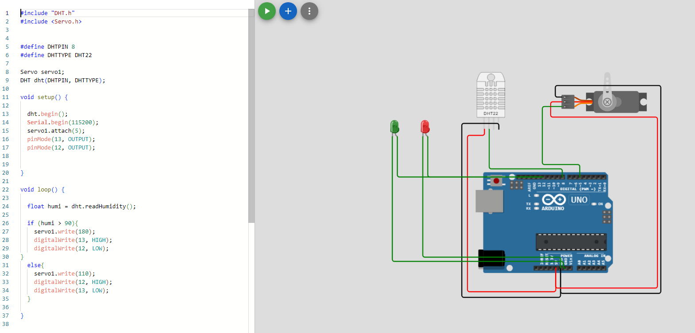
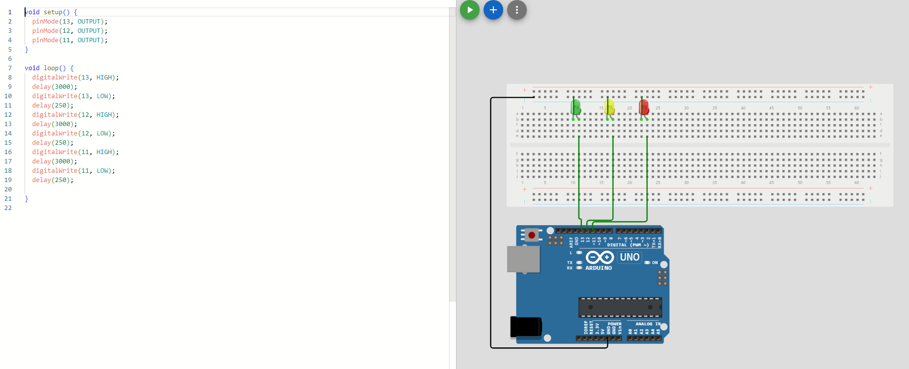
Experiencia Criativa
Em experiencia criativa tivemos 3 trabalhos mais esse que estou enviando sendo 1 deles no Processing, 1 deles na Plataforma Construct e 1 no Visual Studio Code
A seguir veremos algumas Prints de todos eles.
Construct:
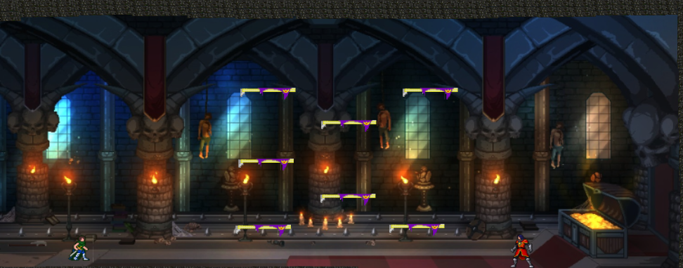
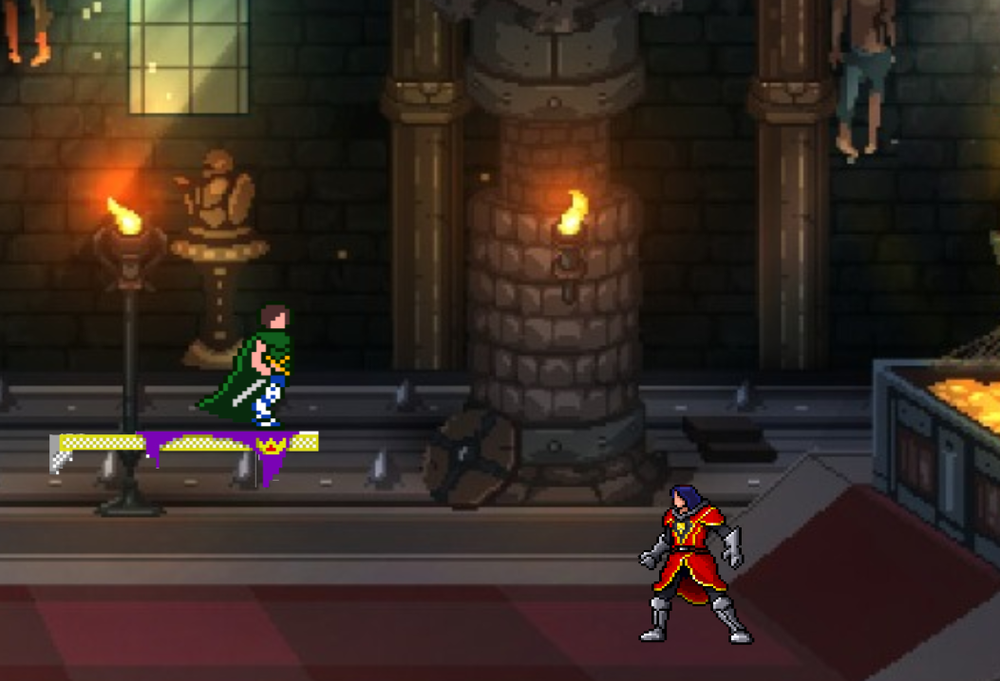
Processing:
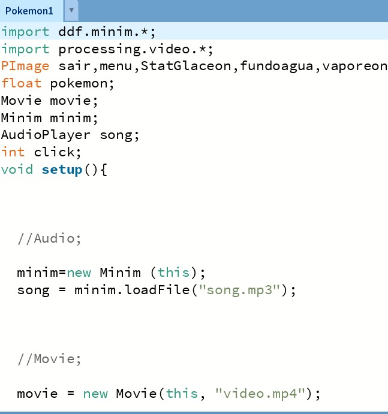
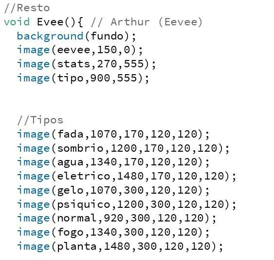
Visual StudioCode:
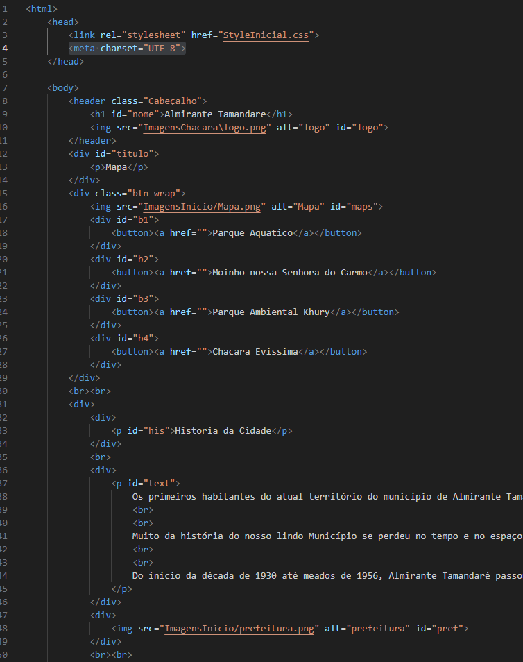
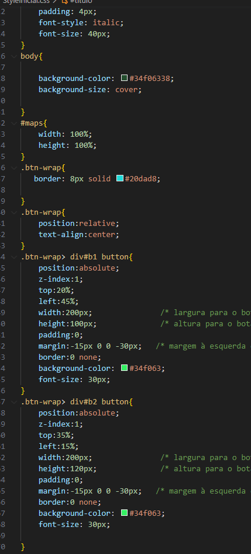
.jpeg)
.jpeg)
.jpeg)